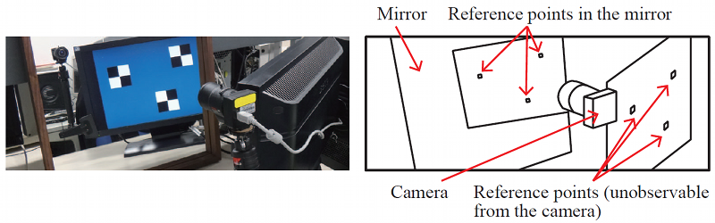

Introduction
This page provides an implementation of our mirror-based camera calibration algorithm presented as
K. Takahashi, S. Nobuhara and T. Matsuyama: A New Mirror-based Extrinsic Camera Calibration Using an Orthogonality Constraint, CVPR2012
and
K. Takahashi, S. Nobuhara and T. Matsuyama: Mirror-based Camera Pose Estimation Using an Orthogonality Constraint, IPSJ Transactions on Computer Vision and Applications, Vol.8, pp.11--19, 2016
- paper: CVPR, IPSJ Transactions on Computer Vision and Applications
- movie: mp4
- bibtex:
@inproceedings{takahashi12new, title = {A New Mirror-based Extrinsic Camera Calibration Using an Orthogonality Constraint}, author = {Kosuke Takahashi and Shohei Nobuhara and Takashi Matsuyama}, booktitle = {Proc.\ of CVPR}, year = {2012}, } @article{takahashi2016mirror, title={Mirror-based Camera Pose Estimation Using an Orthogonality Constraint}, author={Kosuke Takahashi and Shohei Nobuhara and Takashi Matsuyama}, journal={IPSJ Transactions on Computer Vision and Applications}, volume={8}, number={ }, pages={11-19}, year={2016} }
The motivation of this project is to calibrate a camera w.r.t. a reference object which is not observable from the camera. This happens, for example, in display-camera systems such as digital signage, webcam attached to laptop PC, etc. Once obtained the mapping between the display pixel coordinate system and the camera coordinate system, it becomes possible to compute the gazing point (pixel) of a person in front of the display by estimating the gazing direction in the camera coordinate system. This scenario allows the person to move fre ely, while conventional methods typically restrict the head position to be fixed.
The key point to solve the problem is the use of mirrored images. Suppose we have a single static camera \(C\) and a static reference object \(X\) as shown below. The camera \(C\) cannot observe the reference object \(X\) directly. Instead, we use a mirror \(\pi\) and let the camera \(C\) observe the reference object \(X\) through it. The goal of our mirror-based calibration is to estimate the relative posture \(R\) and position \(T\) of the camera \(C\) against the reference object \(X\) by observing three point s of \(X\) via three mirrors \(\pi_j (j=1,2,3)\) under different unknown positions and orientations.

Source code
License
This source code is provided under the BSD 3-Clause license.
Copyright (c) 2012, Kosuke Takahashi, Shohei Nobuhara and Takashi Matsuyama
All rights reserved.
Redistribution and use in source and binary forms, with or without
modification, are permitted provided that the following conditions are met:
* Redistributions of source code must retain the above copyright notice,
this list of conditions and the following disclaimer.
* Redistributions in binary form must reproduce the above copyright
notice, this list of conditions and the following disclaimer in the
documentation and/or other materials provided with the distribution.
* Neither the name of the Graduate School of Informatics, Kyoto
University, Japan nor the names of its contributors may be used to
endorse or promote products derived from this software without specific
prior written permission.
THIS SOFTWARE IS PROVIDED BY THE COPYRIGHT HOLDERS AND CONTRIBUTORS "AS IS"
AND ANY EXPRESS OR IMPLIED WARRANTIES, INCLUDING, BUT NOT LIMITED TO, THE
IMPLIED WARRANTIES OF MERCHANTABILITY AND FITNESS FOR A PARTICULAR PURPOSE
ARE DISCLAIMED. IN NO EVENT SHALL THE COPYRIGHT HOLDER OR CONTRIBUTORS BE
LIABLE FOR ANY DIRECT, INDIRECT, INCIDENTAL, SPECIAL, EXEMPLARY, OR
CONSEQUENTIAL DAMAGES (INCLUDING, BUT NOT LIMITED TO, PROCUREMENT OF
SUBSTITUTE GOODS OR SERVICES; LOSS OF USE, DATA, OR PROFITS; OR BUSINESS
INTERRUPTION) HOWEVER CAUSED AND ON ANY THEORY OF LIABILITY, WHETHER IN
CONTRACT, STRICT LIABILITY, OR TORT (INCLUDING NEGLIGENCE OR OTHERWISE)
ARISING IN ANY WAY OUT OF THE USE OF THIS SOFTWARE, EVEN IF ADVISED OF THE
POSSIBILITY OF SUCH DAMAGE.
Download links
If you use this software, please consider citing the aforementioned paper in any resulting publication.
Ver.1 (CVPR, 3-points / 3-mirrors version) [OBSOLETE / NOT MAINTAINED ANYMORE]
- Matlab version with test data: tnm-matlab-v1.zip (tested with Matlab 2011b and 2012a. Also compatible with GNU Octave v3.6 + Octave-Forge)
- OpenCV version with test data: tnm-opencv-v1.zip (tested with Debian wheezy + libcv-dev package)
See the instruction for details.
Ver.2 (CVA, n-points / m-mirrors version)
Please use the latest code at GitHub. See the instruction for details.